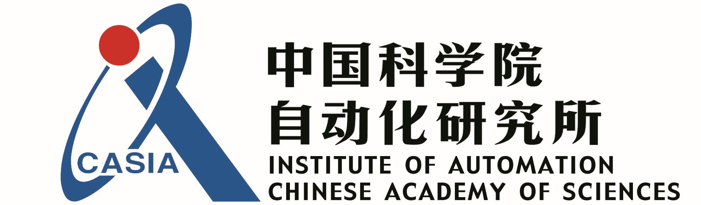

RAPID Hand Manipulation Platform
A Robust,
Affordable,
Perception-Integrated,
Dexterous Hand
for Generalist Robot Autonomy
Abstract
This paper addresses the scarcity of low-cost but high-dexterity platforms for collecting real-world multi-fingered robot manipulation data towards generalist robot autonomy. To achieve it, we propose the RAPID Hand, a co-optimized hardware and software platform where the compact 20-DoF hand, robust whole-hand perception, and high-DoF teleoperation interface are jointly designed. Specifically, RAPID Hand adopts a compact and practical hand ontology and a hardware-level perception framework that stably integrates wrist-mounted vision, fingertip tactile sensing, and proprioception with sub-7 ms latency and spatial alignment. Collecting high-quality demonstrations on high-DoF hands is challenging, as existing teleoperation methods struggle with precision and stability on complex multi-fingered systems. We address this by co-optimizing hand design, perception integration, and teleoperation interface through a universal actuation scheme, custom perception electronics, and two retargeting constraints. We evaluate the platform’s hardware, perception, and teleoperation interface. Training a diffusion policy on collected data shows superior performance over prior works, validating the system’s capability for reliable, high-quality data collection. The platform is constructed from low-cost and off-the-shelf components and will be made public to ensure reproducibility and ease of adoption.
Paper
Latest version: arXiv.
Code and Tutorial
Team


1 Sun Yat-sen University 2 University of California, Merced 3 Chinese Academy of Sciences, Institute of Automation
BibTeX
@article{wan2025rapid,
title={RAPID Hand: A Robust, Affordable, Perception-Integrated, Dexterous Manipulation Platform for Generalist Robot Autonomy},
author={Wan, Zhaoliang and Bi, Zetong and Zhou, Zida and Ren, Hao and Zeng, Yiming and Li, Yihan and Qi, Lu and Yang, Xu and Yang, Ming-Hsuan and Cheng, Hui},
journal={arXiv preprint arXiv:2506.07490},
year={2025}
}Hardware Design
Acknowledgements
Contact
If you have any questions, please feel free to contact Zhaoliang Wan .